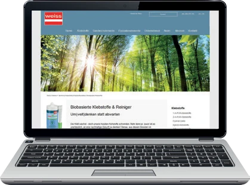
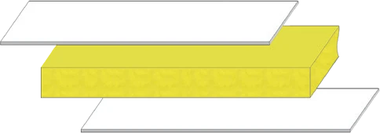
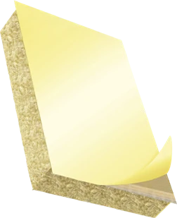
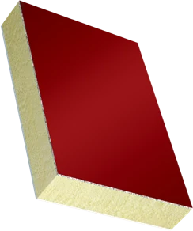
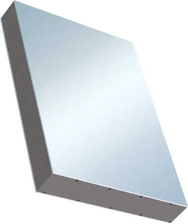
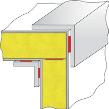
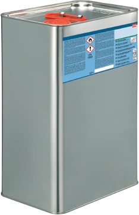
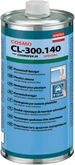
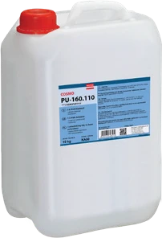

La gamme COSMO® de Weiss-Chemie : colles, mastics, polymères MS, nettoyants et panneaux sandwich pour les professionnels.
Plus de 400 variantes de colles de surface, de construction, instantanées et spéciales. Sur demande, les systèmes de colles peuvent être ajustés à votre procédé de fabrication.
Plus de 5 000 variantes de panneaux sandwich. Finitions, matériaux d'âme et traitements se combinent pour la construction de véhicules spéciaux, de caravanes, de caisses de camion, de façades et d'aménagements.






Les nettoyants et activateurs COSMO® CL préparent les surfaces avant collage et finissent les joints après. La marque PUDOL complète l'offre avec des produits de nettoyage et d'entretien pour les activités professionnelles.
Demander un devis

